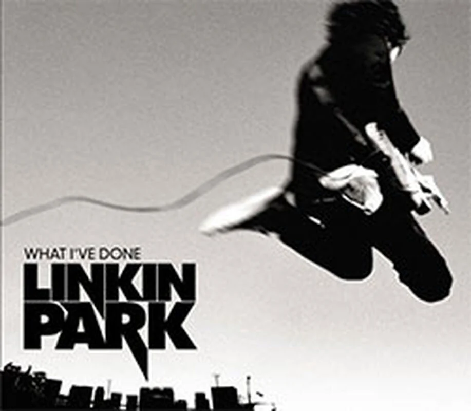
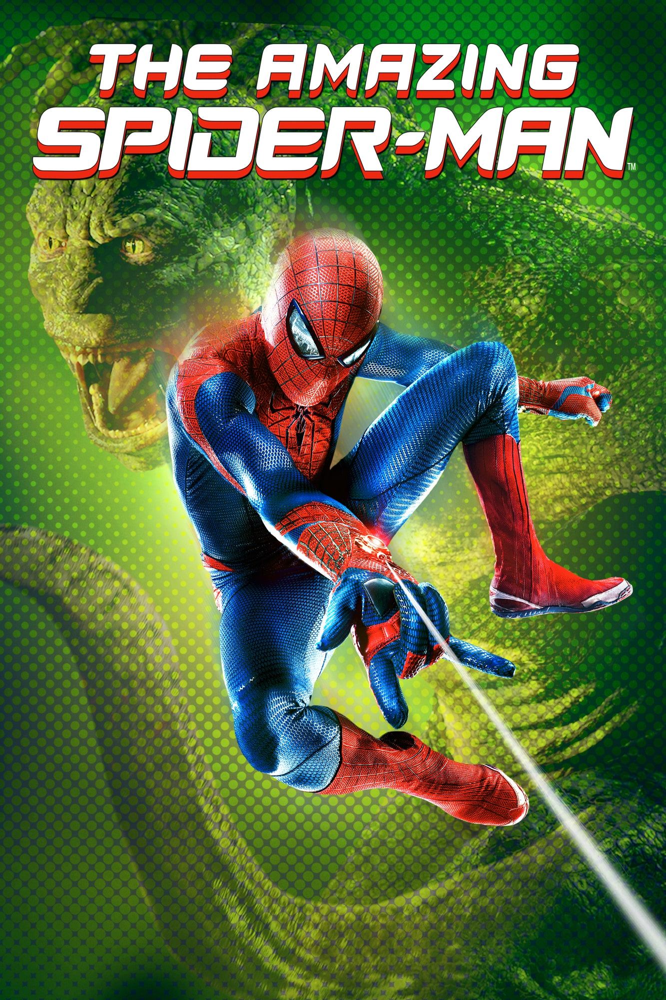

Javier Fernández
La imagen es del horóscopo de China el cual mi año de nacimiento coincide con el del gallo
Mis aficiones

Canción favorita
Mi canción favorita es:
Mis gustos son variados pero el que más me gusta es What I've done por la película Transformers
Mi película favorita
Me gustan pelis de acción y de ciencia ficción, sobre todo de superhéroes.